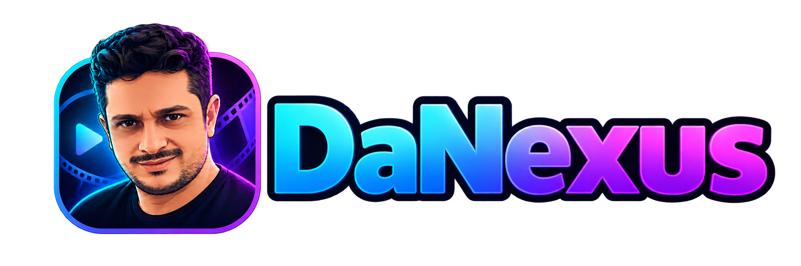

Sua experiência DaNexus.
Duas edições. A mesma identidade. A base certa para cada TV.
FASE 12 • Validação final dos APKsAndamento da entrega
Carregando o último checkpoint…
As etapas técnicas e a aprovação do visual na TV são acompanhadas separadamente.
Fire TV Stick 4K Max
2ª geração • Nuvio oficial beta.4 • DaNexus
180 testes focados, zero falhas. Pacote, assinatura e arquitetura conferidos.
Recomendações com capas em destaque, seleção de perfis com check, confirmação do envio e remoção discreta. Preto, grafite, transparências e azul-marinho muito escuro.
Disponibilidade do download em conferência.Versão e conferência
Versão: 1.1.0-beta.4-danexus.7
Pacote: com.danexus.tv.fire.debug
Arquitetura: armeabi-v7a • 32 bits
Tamanho: 81.184.024 bytes
SHA-256:8252b011e77f7d56f8678d13224f4708823df6f6138136ab46340a94f20041e0
Homologação física do Fire pendente do Dan.
NVIDIA Shield
Shield 2017 • Fork 1.1.0-beta-nt4 • DaNexus
206 testes focados sem falhas. MDBList configurado; conectar após atualizar.
A base nt4 conserva seus recursos nativos e recebe a mesma linguagem cinematográfica clássica do Fire TV.
O botão será liberado depois da validação técnica.Versão e conferência
Versão: 1.1.0-beta-nt4-danexus.5
56252c371e32e01490af7ca8f5d807f86099b5166ebfcfd27c0448f858d860ccAprovação visual e reprodução completa pendentes do Dan.
Como instalar
- Baixe a edição do seu aparelho: Fire 32 bits ou Shield 64 bits.
- No Downloader, abra esta página ou o link direto do APK.
- Instale como atualização da edição DaNexus correspondente. Os pacotes e a assinatura precisam ser compatíveis.
- Abra o DaNexus e siga o checklist abaixo no aparelho.
Código numérico Downloader ainda em preparação. O endereço desta página também pode ser digitado no aplicativo.
Seu teste na TV
Marque somente o que você realmente verificou. As marcações ficam neste navegador.
Registrar um problema
O que está preservado
Marca, logo, cores, PT-BR, menus DaNexus, Fonte Inteligente, aviso lateral, “Mudar fonte”, “Continuar aguardando”, contador, histórico, preferências e recomendações.
Reprodução real, áudio PT-BR, troca de fonte e os formatos HDMI precisam de teste no aparelho. Um build aprovado não comprova esses resultados por si só.